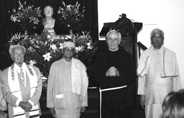

Media


Centenary of the Ramakrishna Mission
July 27-30, 1998
- 
Speech by the Prime Minister of Mauritius delivered at the Ramakrishna Mission, Vacoas, Mauritius
Hon. Dr. Navinchandra Ramgoolam, Prime Minister of Mauritius
(Excerpt from a speech by the Prime Minister of Mauritius delivered on the occasion of the centenary celebrations held on June 15, 1997 at the Ramakrishna Mission, Vacoas, Mauritius)
"One hundred years is a long time in the life of an organization, especially a socio-religious organization. Centered round the teaching of Sri Ramakrishna, the saintly- man, this Movement is as unique as Sri Ramakrishna himself. As remarked by Mahatma Gandhi, his life enables us to see God face to face.
Whenever humankind has suffered great miseries and sorrows, abject poverty, innumerable problems and difficulties, God has always sent his messenger to prevent man from falling into the abyss of total despair. One such Master was Sri Ramakrishna who lived up to this philosophy of service to Man. The advent of Sri Ramakrishna was for the regeneration of the whole of humankind.
Sri Ramakrishna arduously practiced the various paths of Hinduism Islam and Christianity. After realizing the highest Truth through all of them, he declared in unequivocal terms that all religions lead ultimately to the same goal. Let us pause and think about it. Is it not amazing that this simple truth – that all religions lead to the same goal – is not obvious to everyone? We are all God's children, so why should this obvious truth be so difficult to understand? This is the essential teaching of Sri Ramakrishna. From his spiritual realizations, he came to the conclusion that man, as the embodiment of divinity, was himself an object of service.
A young man, Narendra Nath Dutta, fell in the thrall of his appeal. He became his disciple, changed his name, and was later known as Swami Vivekananda. He was ordained to take up the spiritual heritage of the Master and to disseminate his thoughts.
Swami Vivekananda's appearance in the Parliament of Religions in Chicago, in September 1893, brought him into the limelight and he was recognized as an orator by divine right. No sooner had he uttered the words: 'Sisters and Brothers of America,' than a wave of enthusiasm caught the Parliament. The speech that followed is well-known to us. It was Swami Vivekananda who presented Hinduism in its right perspective to the westerners. He spoke of Hinduism as the mother of religions, a religion which has taught the world both tolerance and universal acceptance. His message of unity in a variety of religions is as relevant today as it was a hundred years ago.
When Swami Vivekananda established the Ramakrishna Mission in 1897, he remembered the words of his Master, 'Man is the greatest manifestation of God. If you seek God, then seek him in Man.' He therefore formulated the ideal of the Order in one sentence: 'For one's own liberation and for the good of the world.'
Swami Vivekananda stirred the imagination of so many young intellectuals by preaching the common thoughts present in Hinduism and western religions. Though the pathways are different, the goal is same. He passed on the message that Indian spirituality had a secret that could distinguish and blend the materialistic view with a heightened view of Hindu self-realization through the teachings of Ramakrishna. He showed the way India could learn from the technology of the West while allowing the West to drink from the fountain of Indian spirituality. It was a message that lifted the spirit of a demoralized India in its struggle for independence and in gaining its self-confidence in its perennial philosophy. We all know how Vivekananda stirred the minds of young demoralized Indian youth by his famous exhortation: 'Arise, Awake, and stop not till the goal is reached.'
Service to man, seeing God in Him, is the Swami's greatest gift to the modern world of strife, competition and war.
We are today at a critical period, with a distortion of values, loss of standards and a feeling of frustration. Swami Vivekananda's call can bring a great change in us. He brings a message of hope and of faith. He said, 'Faith is power.' His teachings bring fortitude in suffering, hope in distress and courage in despair. We must not be led away by appearances. Deep down, deep, deep down, there is a providential will, there is a purpose in this world.
An important aspect of the life of Swami Vivekananda is his inspiration for nationalism. Though the Swami never gave any political message, every one who came in contact with him developed a spirit of patriotism. He brought about an awakening among his countrymen. He gave them self-respect, self-confidence and self-assertion. In him everything was positive. When he went to the West, he spoke like an inspired Rishi, in a simple but powerful language. He presented the universal gospel, the Vedanta, in a new form, which was easily appreciated and assimilated by the modern western mind. He sowed the seed for the harmonious union between the East and the West – the spiritual message of the East blended with the material 'savoir-faire' of the West. Just like his Guru, Swami Vivekananda came not for one community but for humanity at large. His message has a universal appeal.
Today, the Ramakrishna Mission has centers spread all over the world and is serving people irrespective of caste, creed, color or position. The Mission has earned recognition for the commendable work it is conducting everywhere in spiritual, cultural, educational and philanthropic fields. It stands out from other religious organizations for the philanthropic and humanitarian activities it undertakes. That is why it is growing from strength to strength. I wish the Ramakrishna Mission every success in its noble task."